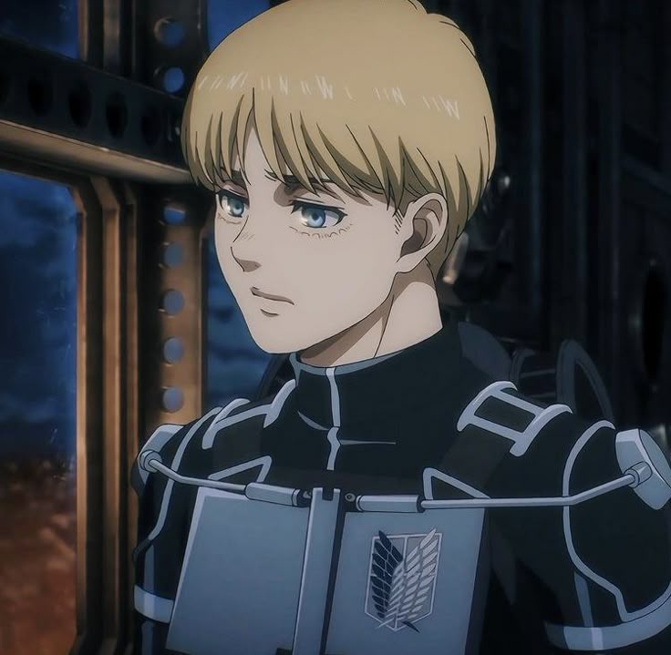

BIOGRAFIA

ARMIN ARLET
Armin Arlert nació en la Ciudad Shiganshina, dentro de los muros que protegían a la humanidad de los titanes. Desde pequeño, fue un niño curioso y soñador, que anhelaba ver el mundo más allá de los muros y descubrir los misterios que los rodeaban. Su deseo de ver el mar se convirtió en su mayor motivación.
Aunque físicamente débil, Armin siempre destacó por su inteligencia estratégica y su capacidad para analizar situaciones complejas. Estas habilidades lo llevaron a ser una pieza clave en muchas de las batallas del Cuerpo de Exploración, donde luchó al lado de sus mejores amigos, Eren Yeager y Mikasa Ackerman.
A lo largo de la historia, Armin demostró ser valiente y decidido, incluso cuando debía tomar decisiones difíciles por el bien de la humanidad. Tras un evento crucial, heredó el poder del Titán Colosal, lo que cambió su vida para siempre.
A pesar de las pérdidas y el dolor, Armin nunca abandonó su sueño de conocer el mundo exterior. Su determinación, empatía y brillante mente lo convirtieron en un héroe inesperado, capaz de cambiar el destino de todos.